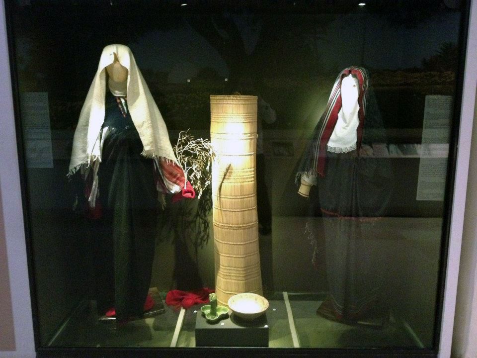

01 — TRADITIONS VESTIMENTAIRES
Les vêtements traditionnels
Les costumes de cérémonie témoignent de la diversité des traditions vestimentaires des différentes localités de l'île. Les couleurs, les formes et les manières de porter les vêtements participent à l'expression des identités locales.